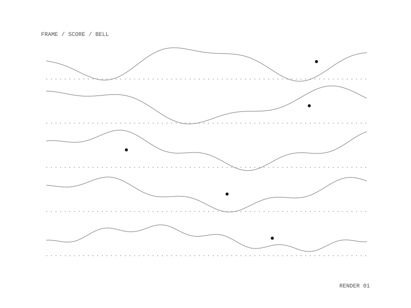

movies
movies is the workspace where short vertical videos are rendered, 1080 pixels wide and 1920 tall, from pictures drawn in a headless browser one frame at a time. It holds clips made from Bloomcast, the Diagrams series 002 to 004 with their music, and Diagram No. 001 in its own repository.

Bloomcast clips
The clip script serves Bloomcast's own files unchanged, except its audio analysis, which comes from a folder given on the command line so a demo loop drives the shader instead of the project's song. A clip is a JSON spec with a name, a start time, a length, a size, a fade-out and a list of segments, and each segment switches to one of Bloomcast's looks with an optional palette, seed, chaos and variety. The script opens each look in turn, renders every frame at the app's frame rate, and pipes the frames to an encoder together with the matching stretch of audio, writing an MP4. One spec steps through eight looks, one every 2.18 seconds, over 17.44 seconds; another keeps the stained-glass look and changes only the seed.
A second mode renders test frames for a list of looks and times and tiles them into one labelled sheet, one row per look. An override folder can stand in for any of the app's files, so shader experiments happen without touching its repository.
Diagrams 002 to 004
Each diagram is one form turning into another, drawn in ink on a dark ground with one red and trailing ghosts, with Bloomcast's shader scenes borrowed for the second form. The three pieces are SEED / WINDOW, CIRCLE / JELLYFISH and WAVE / CITY, each 15 seconds at 30 frames a second. In SEED / WINDOW a point throws out seeds on the golden angle, the seeds become the cells of a rose window that fills with glass and folds into a kaleidoscope, and the window is drawn back into the point. Every frame mixes the new ink with a fading, slowly drifting copy of the frame before, so frames have to be rendered in order.
One score for picture and sound
Each piece lists its own bells, kicks and hats as a score; the renderer saves that score to a JSON file, and the music script reads it, so sound and picture follow the same events. The music is bells in A natural minor made from struck sine waves with inharmonic partials, a soft kick and hats where the picture pulses, a low drone that swells in the middle of the piece, and a reverb. It is written as a stereo WAV file at 44.1 kHz.
Diagram No. 001
The nested repository holds the first diagram: a score page that draws the picture as a function of time and adds feedback, glow and grain, a renderer for its 45 seconds, and the scripts for its pulse, voice and music. Its music is a two-voice setting in A minor: one voice moves by step and the other answers on the nearest note of the A minor triad above it. The audio script writes the beat times to a file the renderer reads, so the drawn point flashes on the pulse.
1080 by 1920, MP4
Bloomcast clips, Diagrams 002 to 004, Diagram No. 001